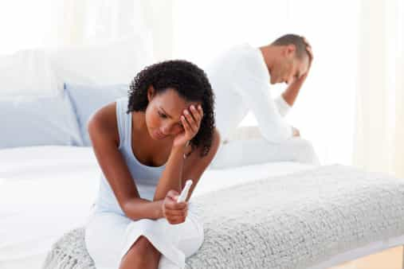
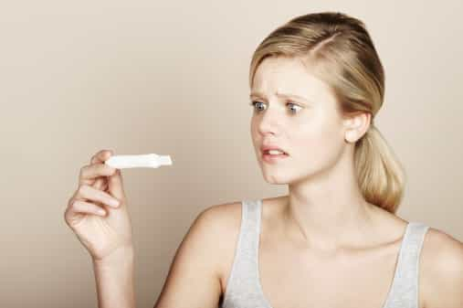
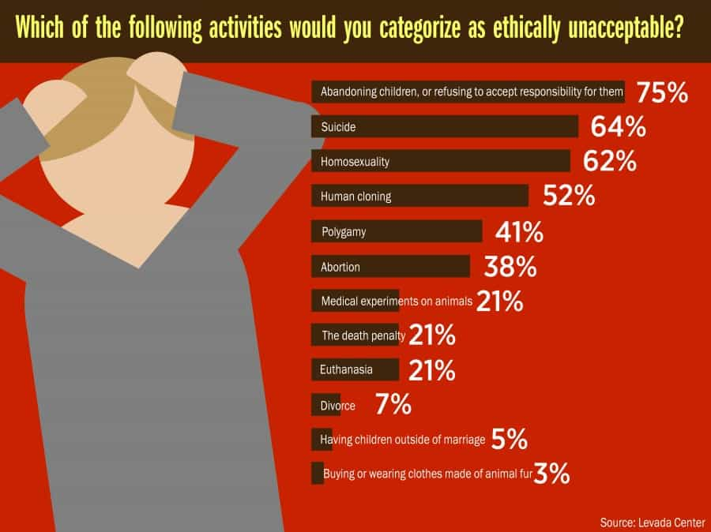
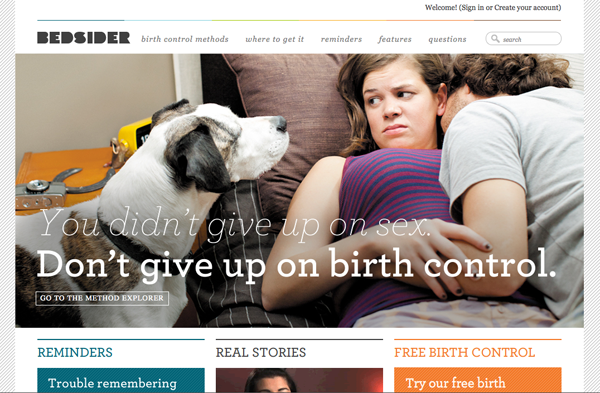

< < < Back
Is Bastardy The New Face Of Modernism? – Return Of Kings
Modern men today, especially those who are in demand, often choose to postpone marriage to play the field. As we all know, a man’s value tends to increase with time (especially SMV), provided he takes steps to maintain himself physically, materially and emotionally. Men in the modern world today have more options and sexual freedom than their forefathers, especially if they pursue self-improvement.
However, one thing which can directly affect a bachelor’s freedom is when his sexual partner gets unexpectedly knocked up. The resulting emotional turmoil and guilt trips can wear down soft-hearted men into possible marriage, especially out of consideration for the welfare of their future offspring, but men who have strong frame control are wise enough to resist it. No wonder marriage is called wedlock, because more often than not, it locks a man’s freedom. In the long run, it must only be considered—if ever—after deep thought.

It can affect any man – when he least expects it
Earlier last month, “heartthrob” actor Ryan Gosling’s impending fatherhood in the wake of the surprising pregnancy of his actress girlfriend, Eva Mendes, made “shocking and devastating” news (to women) in the tabloids and press. The story took many contrasting and contradictory twists and turns in the press since it first made the headlines. According to some, it was learned that Mendes’s pregnancy was totally unplanned, and blindsided the 33-year-old Gosling because their relationship had hit a rough patch just before Mendes, six years Gosling’s senior, shared the news of the pregnancy.
Some reported that tensions had risen between the two, because their disagreements always came back to a central issue: “Eva wants to marry Ryan, but so far, he has resisted. ”Whereas other stories reported that it was Gosling who changed Mendes’s mind to agree for marriage, as she considered it “a very old fashioned archaic kind of thing.” However, after all this media-reported drama, recent reports state that all is fine between the couple, and both are elated with the news, and are supposedly set to marry after the birth of the child.
Unexpected premarital pregnancy: marry or not?
Many men today could find themselves in a similar situation. Whether from a LTR “girlfriend,” a lusty ONS, or even a fuckbuddy, the news of unexpected impending fatherhood can unexpectedly jolt a bachelor’s life. Things become more complicated in case the woman demands to be wifed-up because she’s carrying your seed. What do you do? Maintain frame control to stand your ground.
The logical answer would and should be TO REFUSE (or at least hold off) marriage, especially if you’ve moved on from her. No man needs to guilt trip himself into marriage simply for becoming a daddy when he didn’t want to be one. You could feel guilty for not practicing safe sex, but do remember the sex was consensual. If she’s willing to get raw dogged, and that too with completion, then pregnancy (or STDs) is what she’s potentially asking for—not only from you, but from anyone who would raw dog her. Using contraceptives is not only your responsibility but hers as well.
The questionable lineage of future mankind

In earlier times, people (or women specifically) used to wait until marriage to have children. In today’s world, people would rather have children first to possibly get married later—or sometimes not get married at all. The main reason for this is the lack of incentives for modern men to choose marriage, mostly due to the spread of feminist values of gender equality, materialistic marriages of shallow love, the stooping quality of modern women’s chastities in permissive hookup cultures, and lopsided divorce courts. These all enslave men further, should a man choose to put the noose of marriage around his neck. Thus sex without marriage, or even children without marriage, seems safer than marriage itself – either through adoption, surrogacy or premarital sex. This alarming trend has begun to affect the nature of traditional societies too, as seen below from sample trends from contemporary ‘traditional’ societies:

In today’s age of female promiscuity, conservative women moving from more traditional societies to modern feminist societies also tend to become more promiscuous, which corrupts them even further. Two years ago, a research found that more than half of births to American women younger than 30 are outside marriage.
Compared to the 1990s when a third of Americans were born out of wedlock, now 41 percent of babies do not have married parents. There are racial divides:
And educational divides:
- 92 percent of college-educated women are married when they have a child
- 62 percent of those with post-secondary schooling are married when they give birth
- 43 percent of women with a high school diploma are married when they give birth
But another disturbing factor is that promiscuity is rising among college-educated women. Who marries these women later on?
Elsewhere, in the world today, births outside marriage represent a majority in a growing number of European and most Latin American countries, but remain rare in Asia:
“In 2011, 39.5% of all births in the 27 EU countries were extramarital. The majority of births occur outside of marriage (figures as of 2012, except where otherwise stipulated) in the following European countries: Iceland (66.9%), Estonia (58.4%), Slovenia (58% – in 2013), Bulgaria (57.4%), France (57.1% in 2013), Norway (54.9%), Sweden (54.5%), Belgium (52.3%), and Denmark (50.6%).
The proportion of extramarital births is also approaching half in Portugal (47,6%) as of 2013,the United Kingdom (47.6%), the Netherlands (46.6%) Latvia (45%) all 2012 numbersand Czech Republic (45% in 2013).Other European countries with a high rate of extramarital births for the year 2012 are Hungary (44.5%), Finland (41.5%), Austria (41.5%), Luxembourg (37.1%), Slovakia (35.4%), Germany (34.5%).The lowest proportion of births outside marriage were found in Greece (7.6%), Croatia (15.4%), and Cyprus (18.6%).
In the EU, the average percentage of extramarital births has risen steadily in recent years, from 27.4% in 2000 to 39.5% in 2011.
It is notable that traditionally-conservative Catholic countries in the EU now also have substantial proportions of extramarital births: Portugal, 47,6% (as of 2013); Spain, 35.5% ; Ireland, 35.1%; Italy, 28.0%, all numbers for the year 2012.
To a certain degree, religion correlates with the proportion of extramarital births (e.g., Greece, Cyprus, Croatia have a low percentage of births outside marriage), but this is not always the case: Portugal (47.6%) and Romania (31%) are among the most religious countries in Europe.
The percentage of first-born children born out of wedlock is considerably higher (by roughly 10%, for the EU), as marriage often takes place after the first baby has arrived. For example for the Czech Republic, whereas the total extramarital births are less than half (45%), the percentage of first-born outside marriage is more than half (55.7%)
Latin America has the highest rates of non-marital childbearing in the world (55–74% of all children in this region are born to unmarried parents).In most countries in this traditionally Catholic region, children born outside marriage are now the norm. Recent figures from Latin America show non-marital births to be 74% in Colombia, 70% in Paraguay, 69% in Peru, 63% in the Dominican Republic, 58% in Argentina, 55% in Mexico.In Brazil, non-marital births increased to 65.8% in 2009, up from 56.2% in 2000. In Chile, non-marital births increased to 69.7% in 2012, up from 48.3% in 2000.
Even in the early 1990s, the phenomenon was very common in Latin America. For example, in 1993, out-of-wedlock births in Mexico were 41.5%, in Chile 43.6%, in Puerto Rico 45.8%, in Costa Rica 48.2%, in Argentina 52.7%, in Belize 58.1%, in El Salvador 73%, in Suriname 66% and in Panama 80%.
Out-of-wedlock births are less common in Asia: in 1993 the rate in Japan was 1.4%; in Israel, 3.1%; in China, 5.6%; in Uzbekistan, 6.4%; in Kazakhstan, 21%; in Kyrgyzstan, 24%. However, in the catholic Philippines, the out-of-the-wedlock birth rate was 37% in 2008-2009.”
These trends reveal certain patterns:
- Religious or traditionally conservative modern societies are now having more unwed births
- Marriage often takes place after the first born baby arrives (which is usually out of wedlock) which serves as the usual precursor (or trigger) to subsequent marital commitment
- Bastardy (illegitimacy) is lower in eastern cultures, or less economically-developed eastern societies
Thus, even “religion” or “traditional conservatism” cannot prevent bastardy much in modern societies, as these trends show. Rather, these trends could also highlight the hypocritical application of these systems in modern societies, where they cannot prevent women from opening their wombs to fertilization without marriages. You can’t blame religion for promoting these trends; rather, a lack of sincere belief in religion itself could also be the reason for the laxity in morals.
It’s an ominous paradoxical paradigm for modern societies: already plummeting birth rates in permissive cultures, but when people there do decide to reproduce, they often reproduce without marriage. Modernism, progressivism, liberalism, all come with a heavy price for the formation of a traditional family.
And these trends look likely to continue to rise in the near future, as promiscuity rises and incentives to stay or get married for men continue to further drop in modern feminist societies. The future generations could technically be branded as the generation of bastards, as most of them would indeed be born to unmarried parents. Civilizations of bastards, whores and sluts, yes those are the ominous trends for the future.
Demonizing unwilling fathers in modern societies
In modern times, unwilling fathers are often demonized as irresponsible drifters in modern feminist societies. This has led to cases which have sparked debates about men’s constitutional rights to avoid procreation. The question looms large: what incentives do men often have to get married in such societies? Almost nil. Sluthood is celebrated in the name of feminism, entitled women waste away their prime on the cock carousel and often acknowledge preferring “nice guys” only for marriage, but not dating. So in this paradigm, does a man who gets access to premarital sex from a woman need to “man up” to take responsibility for impregnating her, by marriage? Logically speaking, no.
You’d probably think I’m being ironic or even hypocritical because I’m critiquing the rising trends of bastardy in the world, whereas on the other side I’m suggesting that men shouldn’t wife up women who get knocked up by them out of wedlock.
Understand this oft-repeated truth: women are the gatekeepers of sex, and control the access to the womb. If they choose to fuck, or even get knocked up, no one can stop them—especially in today’s permissive fem-centric societies. The rising trends in bastardy, as seen above, are thus often the result of irresponsible sexual choices by women, not men. Whether the pregnancy resulted out of an act propelled by a fear regarding her ticking biological clock, or it was her irresponsible and passionate act of immaturity, men don’t need to bear accountability for a woman’s sexual choice of premarital unsafe sex.
Why should men have to bear responsibility for a woman’s consensual irresponsible sexual choices, when women today say they have the right to do whatever with their bodies? Why are more women openly choosing the path of unwed motherhood by choosing unsafe sex and promiscuity? If she wants or agrees to get raw-dogged, is it the man’s fault if she gets knocked up? Is social welfare for unwed motherhood to blame too? There are already polarized debates whether unwed mothers deserve social welfare. Modern women often don’t want consequences or responsibilities for their choices, but want to blame or even ensnare men for them.

If men are not entitled to sex—as how modern gender egalitarian societies propose—then it’s fine, but women then too shouldn’t entitle themselves by expecting men to to bear responsibility for an unexpected pregnancy with compensation in the form of a marriage. Sexual freedom comes with unspoken responsibilities, moreso for women; and women should bear, and be made to bear these responsibilities for the sexual freedom they enjoy today, and the choices they make. Modern feminist societies are increasingly taking away these responsibilities from women. Men should not exonerate these already socially-empowered women further in such situations by wifing them up for irresponsible sexual decisions.
Indeed, there are some men who want to be fathers, and some who want to get married—someday. The logical, responsible, and traditional way to have children is to wait to have them within a marriage. But, to each his own. Either way, don’t ever let a woman emotionally manipulate you in wifing her up simply because you knocked her up.
Read More: 2 Ways Quality Men Get Locked Into A Relationship


{kind=link}
{kind=link}
{kind=link}
{kind=link}
{kind=link}
{kind=link}
{kind=link}